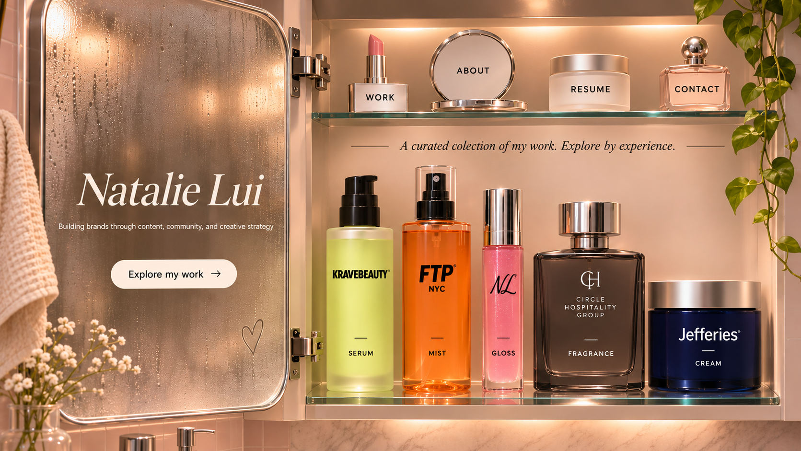

Skip to content

Work
About
Resume
Contact
KraveBeauty
Serum
For The Plot NYC
Mist
Content Creation
Gloss
Circle Hospitality
Fragrance
Jefferies
Cream
NATALIE LUI · THE BEAUTY CABINET
WORK
ABOUT
RESUME
CONTACT
A curated collection of my work.
Explore by experience.
← Close the cabinet
Select a product to explore an experience
Work
About
Resume
Contact
A BEAUTY CABINET OF EXPERIENCES
Natalie Lui
Building brands through content, community, and creative strategy
Explore my work
↗
♡